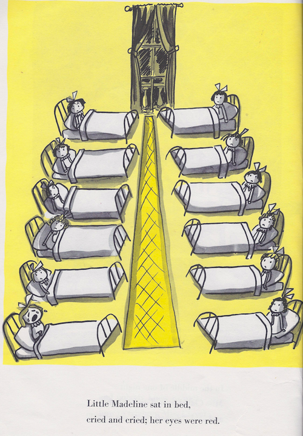
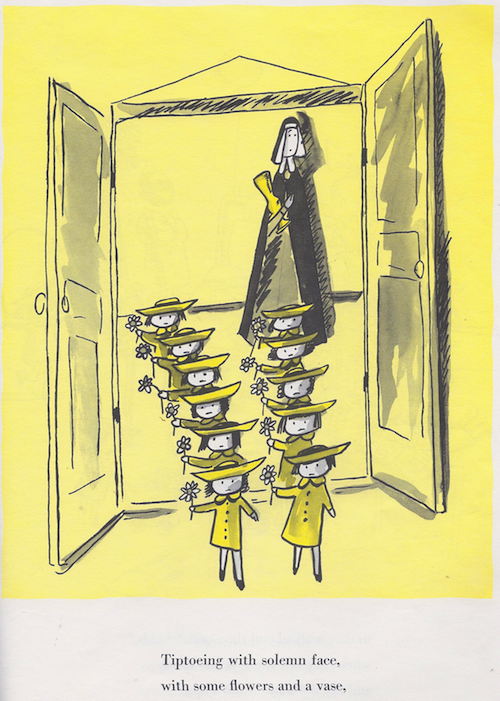

Nearly everyone is familiar with Madeline, Ludwig Bemelmans’ classic 1939 children’s tale of the girls in a Parisian boarding school.
You will recall that there are 12 of them, and they go about their days in two nice little lines. Always 12 of them, whether they are out and about.
Or eating, washing up or sleeping.
But then one night, poor little Madeline gets sick :-(.


Count them up.
It’s back to eleven when they brush their teeth and go to bed.
What’s going on? I’ve studied the faces of the 11 remaining girls, and while the images are not entirely consistent, this girl never appears anywhere else.
Who is the mystery girl? Where did she come from? And why didn’t she brush her teeth after eating?
But seriously. I find this kind of thing curious. Bemelmans was clearly pretty careful about counting the number of girls in each scene. So how did this one get screwed up? And why didn’t anyone notice before it was published. Or since (as far as I can tell from searching the web, this has not been noted before).
11 Comments